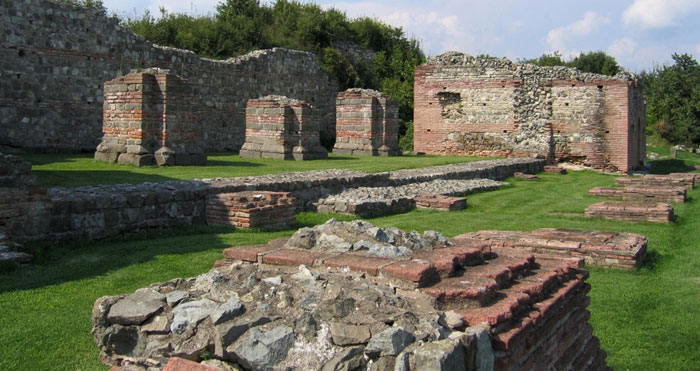
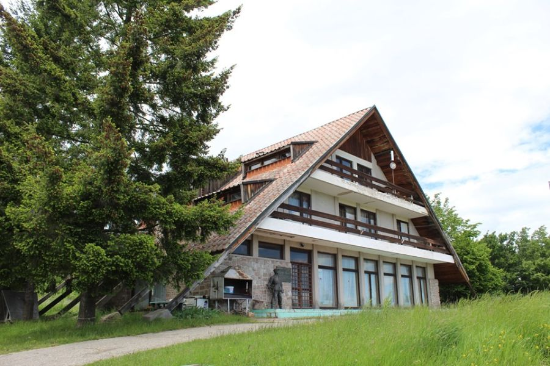

Aktivnosti i Atrakcije
Vizantijski centar Caričin grad
 Vizantijski centar **Caričin grad**, poznat i kao **Iustiniana Prima**, izgrađen je u 6. veku u vreme vladavine cara Justinijana I. Ovaj arheološki lokalitet predstavlja jedan od najvažnijih spomenika iz vizantijskog perioda na Balkanu. Caričin grad je bio planiran kao administrativni, kulturni i verski centar, a danas je deo UNESCO-ove liste svetske baštine. Posetioci mogu uživati u razgledanju iskopina, crkava, javnih i privatnih zgrada koje oslikavaju život u tom vremenu.
Radan planina
 **Radan planina** je prelepa planina koja se prostire blizu sela Prekopčelica i Domacinstva Marković. Poznata po svom prirodnom okruženju, ovo područje je idealno za ljubitelje planinarenja, biciklizma, i istraživanja prirode. Sa vrhova Radan planine pruža se spektakularan pogled na okolne predele i reku Moravu. Planina je bogata biljnim i životinjskim svetom, a takođe je dom mnogim planiranim stazama koje omogućavaju uživanje u prirodi i rekreaciji.
Đavolja varoš
 **Đavolja varoš** je jedinstvena prirodna formacija smeštena u blizini grada Prokuplja, u centralnom delu Srbije. Ovaj fenomen poznat je po svojim neobičnim i impresivnim zemljanim stubovima, koji podsećaju na toke, poznate kao "Đavolje kule", a koji su nastali usled erozije.
Đavolja varoš je deo prirodnog rezervata, koji je okružen divnim pejzažima i pruža savršen ambijent za ljubitelje prirode i geologije. Ovaj lokalitet je bogat raznovrsnim biljnim i životinjskim svetom, a posebno je atraktivan zbog svojih neobičnih formacija, koje podsećaju na gradsku ruševinu.
Sa vrhova Đavolje varoši, posetioci mogu uživati u panoramskom pogledu na okolne predjele, a staze koje vode kroz ovo područje omogućavaju nesmetano istraživanje ovog prirodnog čuda.
**Đavolja varoš** je jedinstvena prirodna formacija smeštena u blizini grada Prokuplja, u centralnom delu Srbije. Ovaj fenomen poznat je po svojim neobičnim i impresivnim zemljanim stubovima, koji podsećaju na toke, poznate kao "Đavolje kule", a koji su nastali usled erozije.
Đavolja varoš je deo prirodnog rezervata, koji je okružen divnim pejzažima i pruža savršen ambijent za ljubitelje prirode i geologije. Ovaj lokalitet je bogat raznovrsnim biljnim i životinjskim svetom, a posebno je atraktivan zbog svojih neobičnih formacija, koje podsećaju na gradsku ruševinu.
Sa vrhova Đavolje varoši, posetioci mogu uživati u panoramskom pogledu na okolne predjele, a staze koje vode kroz ovo područje omogućavaju nesmetano istraživanje ovog prirodnog čuda.
Prolom Banja
**Prolom Banja** je poznato banjsko lečilište smešteno na jugoistoku Srbije, u blizini planine Radan. Ova banja je prepoznatljiva po svojoj lekovitoj mineralnoj vodi, koja se koristi u terapijske svrhe i poznata je po blagotvornom dejstvu na različite zdravstvene tegobe.
Pored lekovite vode, Prolom Banja je okružena prelepim prirodnim pejzažima, idealnim za opuštanje i rekreaciju. Brojne staze kroz netaknutu prirodu omogućavaju posetiocima da uživaju u šetnjama i istraživanju okoline.
U blizini se nalazi i čuvena **Crkva Lazarica**, kao i **Đavolja Varoš**, što ovu destinaciju čini savršenim mestom za spoj zdravlja, prirode i istorijskih znamenitosti. Posetioci mogu uživati u čistom vazduhu, wellness sadržajima i gostoprimstvu koje Prolom Banja pruža tokom cele godine.
Ostale aktivnosti:
Pored istraživanja istorijskih lokaliteta i prirodnih lepota, Domacinstvo Marković nudi i brojne druge aktivnosti kao što su:
- Šetnje kroz prirodu i šumske staze
- Vožnja biciklom i uživanje u svežem planinskom vazduhu
- Ribolov na obližnjim rekama
- Obilazak kulturnih spomenika u okolini, kao što su manastiri i stari gradovi
Bilo da tražite opuštanje ili avanturističke aktivnosti, okolni krajevi pružaju mnogo mogućnosti za uživanje u prirodi i kulturi.